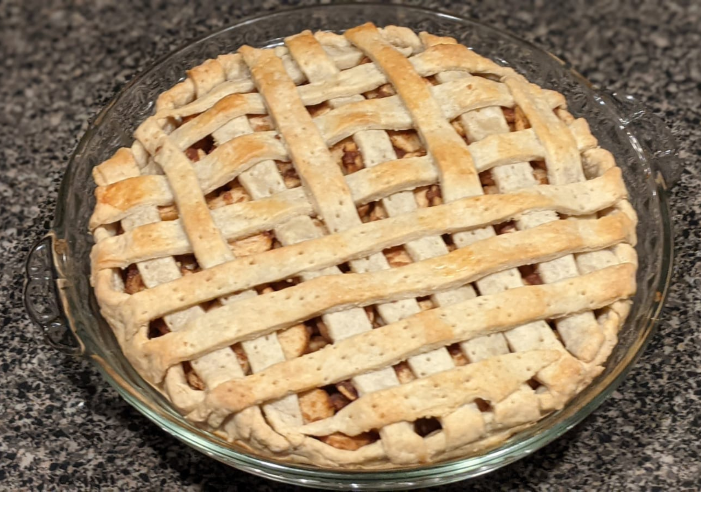
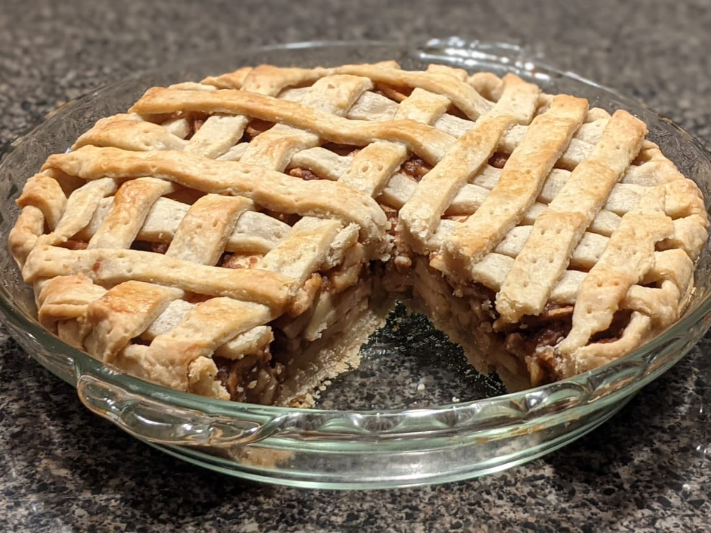
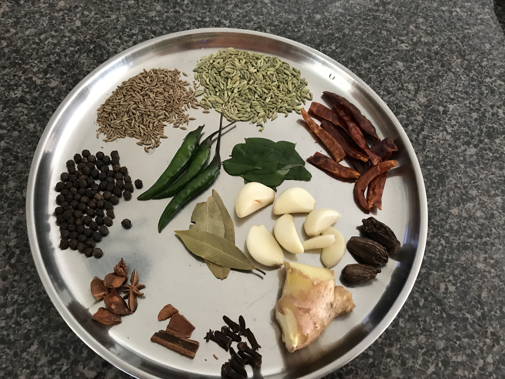
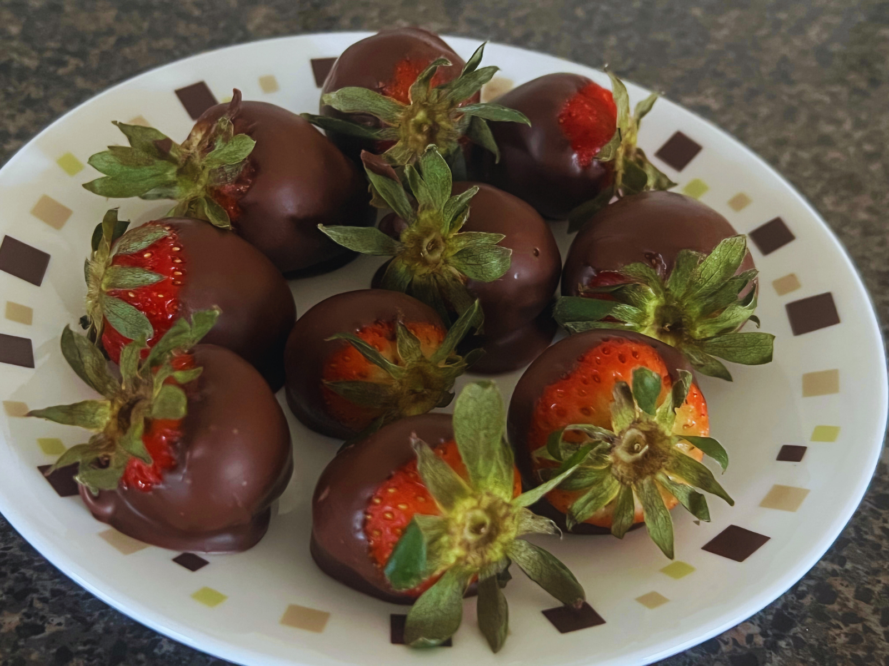

Welcome to Kavita's Channel
About Me:
Hi! I am Kavita!
(kh-vee-tah)
Welcome to my blog!
Among many things I love gardening, traveling and cooking.
I also love reading and writing.
About Me:
Hi! I am Kavita!
(kh-vee-tah)
Welcome to my blog!
Among many things I love gardening, traveling and cooking.
I also love reading and writing.
Picture from our road trip when we went to Canda.
Beautiful radiant sunflowers!

Thankful to Mother Nature for her blessings!

Saw this on a trip somewhere, and couldn't resist clicking it.

Blue Lilies - a rarity!

Apple Pie - delicious

A slice of heaven!

Variety that brings in a flavor in unity!



I hope you enjoy this recipe as much as I have enjoyed listing it out for you.